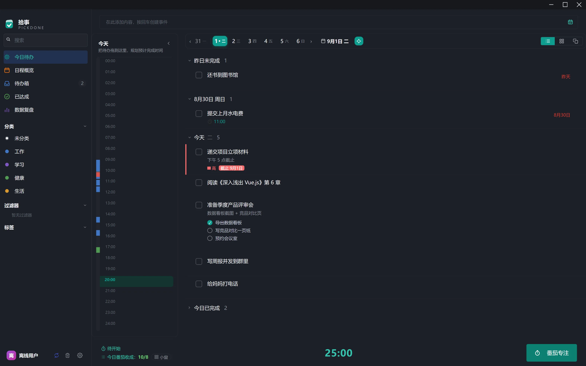
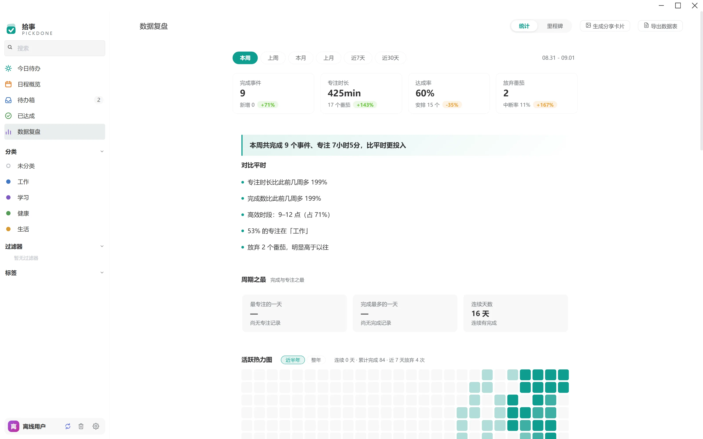
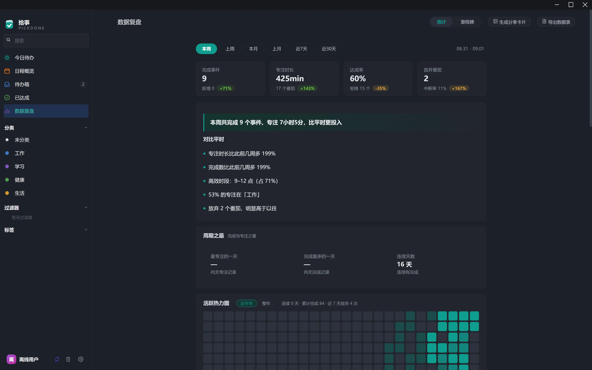

计划、专注、复盘，
一气呵成
拾事把待办、日程、番茄专注和数据复盘连成一条工作流：专注时长自动归账到每一件事，周报替你把一周讲成故事。零账号、零联网——数据只存在你的电脑里。
内容由浏览器内置的演示数据生成，仅保存在你自己的设备上，不会上传。
番茄不是插件，
是整个产品的骨架
从今日清单到 24 小时时间轴，专注与休息的每一次轮转都贯穿全程——每个番茄都会沉淀到具体的事项上。
一条完整的工作流，不只是一个计时器
专注与休息自动轮转，时长在设置里随便调；桌面悬浮窗、白噪音与提示音陪伴。专注时挂上任务，结束时时长自动归账——一天结束，时间轴上看得见每一分钟去了哪。
- 悬浮窗：缩到角落的专注小窗，随时报进度
- 白噪音：10 类真实录音，专注更有沉浸感
- 24h 时间轴：专注与休息一目了然，支持事后补录

今日待办 · 左侧为 24 小时时间轨复盘是小作文，不是数字墙
基于你自己的历史基线生成叙事式周报：这周怎么样、比平时更投入还是松懈、下一个周期怎么调整。没有虚荣指标，只有说得人话的复盘。
- 叙事周报：先读一段总结，再看数据
- 活跃热力图：GitHub 风格，坚持看得见
- 成就徽章：里程碑与连续坚持，值得被记录
- 分享卡片：一键生成，把坚持晒出来

数据复盘 · 浅色
数据复盘 · 深色月历上排日程，拖一下就改期
月 / 周 / 时间块三种视图，农历、节假日与调休一应俱全。任务拖到哪天就算哪天；重复任务支持天 / 周 / 月 / 年，甚至按农历重复。
- 拖拽改期：排程像挪便签一样直观
- 农历与节假日：按中国日历过日子的任务也能重复
- 多重提醒：一件事可以设多个提醒时间
 日程月历 · 农历 + 节假日
日程月历 · 农历 + 节假日
你和 AI，
用同一套入口
拾事的所有核心能力都开放为命令行原语，支持结构化输出。把它注册成 Claude、Cursor 等 AI 助手的工具，你的待办从此可以被托付——不用为 AI 单独开接口。
不会命令行？完全没关系——这一区是给 AI 助手和进阶玩家准备的，跳过它不影响任何日常使用。
- 20+ 命令：任务、子任务、统计、回收站全域覆盖
- --json 输出：Agent 拿到结构化数据就能干活
- 同一份数据：人和 AI 读写同一个本地库，没有同步
把待办当产品的每个细节都认真做
全局快捷键
任何界面一键唤起迷你输入条，想到什么一秒记下。
四象限矩阵视图
今日清单在列表与四象限之间一键切换，要事一眼定位。
智能重复
天 / 周 / 月 / 年任意组合，支持农历重复与跳过节假日。
桌面小组件
半透明日历、待办卡钉在桌面上，回到桌面一眼看清今天。
多重提醒
一件事可以设多个提醒时间点，重要的事不靠脑子记。
子任务与番茄预估
拆步骤、估番茄，每个任务的花费都算得清清楚楚。
深色模式
完整打磨的深色主题，深夜专注不刺眼，跟随或手动切换。
撤销与回收站
完成、删除都可撤销；误删的东西在回收站里等你反悔。
在线演示
内容由浏览器内置的演示数据生成，仅保存在你自己的设备上，不会上传。
自动备份
内容去重 + 分级保留 + 危险操作前快照，一键从备份恢复。
主流云待办，和拾事有什么不同
| 主流云待办 | 拾事 PickDone | |
|---|---|---|
| 开始使用 | 注册账号，绑定邮箱或手机号 | 下载即用，无需任何账号 |
| 数据存在哪 | 厂商的云端服务器 | 你电脑里的一个加密数据库文件 |
| 断网时 | 功能受限，同步报错 | 完整可用，本就为离线而生 |
| 数据导出 | 格式受限，部分功能要会员 | 数据库文件 + 数据表格 + 长图，随时带走 |
| AI 接入 | 封闭，或仅限官方助手 | 开放 CLI，任何 AI 助手都能替你管任务 |
| 复盘 | 统计图表与数字 | 基于个人基线的叙事式周报 |
| 价格 | 免费版受限 + 订阅 / 买断 | 完全免费，MIT 开源 |
| 多端同步 | 全平台实时同步 | 桌面优先；数据是一个文件，拷到哪用到哪 |
| 从旧应用迁移 | 手动重录，或导出格式互不相通 | 一键导入主流待办应用的备份 CSV，重复自动去重 |
云同步不是不好——只是它不该是唯一的选项。你的数据该有第三种去处。
你的数据，只有你能看见
没有服务器，就没有泄露；没有账号，就没有画像。备份文件即完整数据，拷走即迁移。
本地加密存储
任务、专注记录与统计全部落在一台设备的加密数据库里，不采集、不上传、不分析。
自动备份分级保留
近期高频快照 + 更早的低频锚点，内容去重不占空间；清空回收站这类危险操作前自动留底。
随时带走
数据表格一键导出，分享卡片随出随用；哪天不用了，删掉软件，文件还在你手里。
下载拾事，双击即用
安装版支持应用内自动更新；便携版单文件免安装，拷进 U 盘也能跑。
系统要求：Windows 10 / 11（64 位）。 每个版本附带 SHA256SUMS.txt 校验文件，安装包可自行核对。 装好后，先看《5 分钟上手：你的第一个番茄》→ · 查看全部版本与更新日志 →
你可能想问
真的完全离线吗？会不会偷偷联网？
是。拾事没有任何账号体系与云端服务器，任务、专注记录、统计全部存储在本机数据库文件中；应用不采集任何数据。唯一可能的外部请求是检查更新，也可以在设置里改为手动检查。
换电脑或重装系统，数据怎么办？
你的全部数据就是一个数据库文件，加上自动备份目录。新机器装好应用后把文件拷回去即可；应用还内置一键从备份恢复，误删了也能找回。
免费的，那靠什么维持？
拾事是个人兴趣驱动的开源项目，MIT 协议，代码全部公开，不设付费墙、不塞广告。如果它对你有用，去 GitHub 点个 Star 就是最大的支持。
支持 macOS / Linux 吗？
目前主要在 Windows 10 / 11 上打磨与验证。macOS / Linux 在计划中，欢迎到 GitHub 提 issue 反馈需求，甚至参与适配。
系统自带的时钟就有番茄钟，为什么还要用拾事？
系统时钟是个计时器，拾事是一套工作流：番茄和任务绑定、时长自动归账到具体事项，24 小时时间轴和叙事式周报帮你复盘——计时只是最浅的一层。
「让 AI 替我管任务」具体怎么用？
拾事内置 CLI，所有命令支持 JSON 输出。把它注册成 Claude、Cursor 等 AI 助手的工具后，你可以直接说「帮我把周报加到周五并提醒我」，AI 会调用 CLI 完成——人和 AI 操作同一个本地库，无需任何云同步。
「装了就吃灰」怎么办？我自己也坚持不下去。
拾事专门为「坚持不下去」设计了兜底：托盘常驻随时回得来、桌面小组件让清单躺在桌面上、全局快捷键一秒记一条、悬浮窗提醒你正在专注；每周的叙事复盘会拉你回来看一眼自己走了多远。